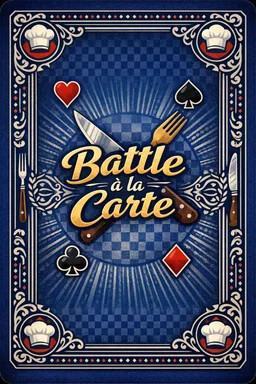
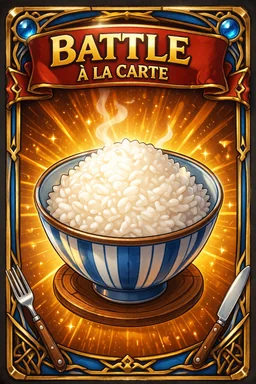
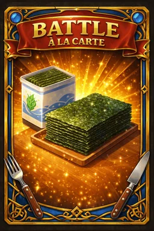
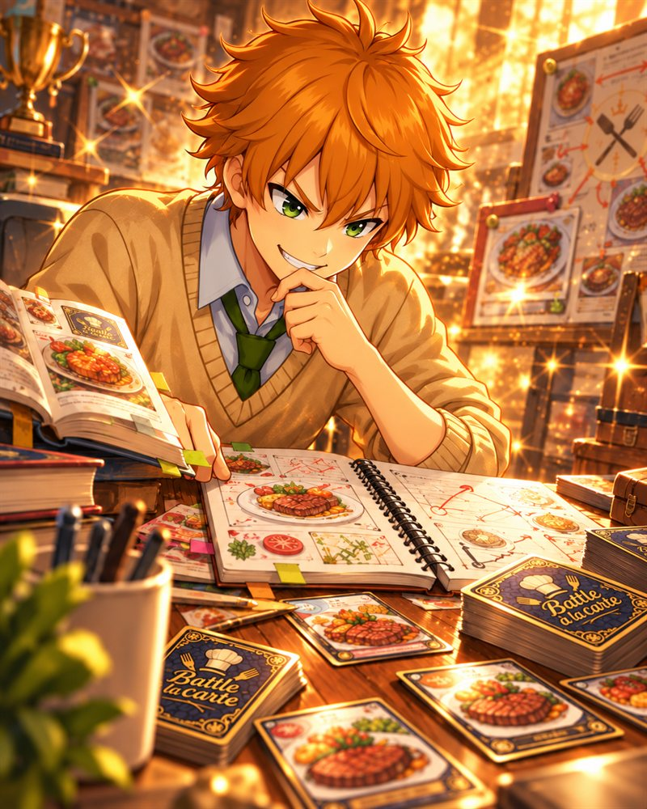
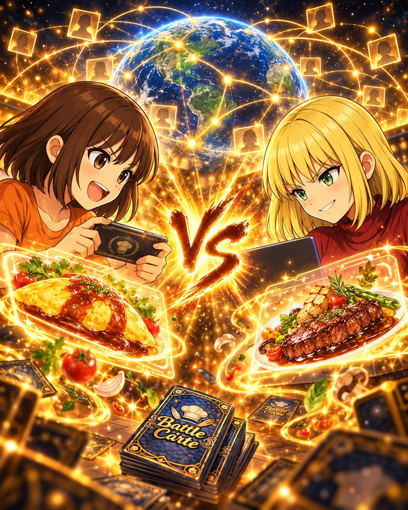
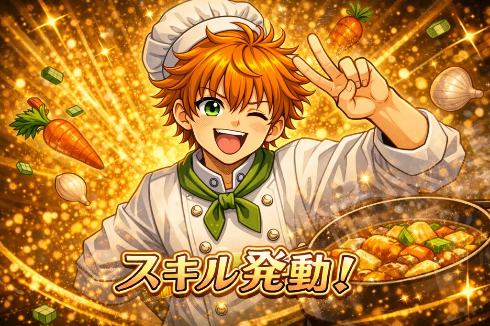

料理 × 対戦 × ひらめき
手札とセットカードを組み合わせて、
料理を完成させよう。
「Battle à la carte」は、材料を集めて料理を作り、先に10点以上を目指す対戦カードゲームです。
イベントカードや加工アイテムを使って、相手より一歩先に勝利をつかもう。
CHEF'S NEWS
シェフ通信（お知らせ）
気になるお知らせは「詳しく見る」から内容を確認できます。
-
Web版NEW
ミッションとカードスリーブを追加
-
Web版
モバイル版の画面を見やすく再配置
-
Web版
v0.5.0 ルールでバランス調整
-
Web版・Unity版
降参機能を追加／Unity版 v0.4.0 を公開
-
今後の予定
準備中・追加予定のメニュー
HOW TO PLAY
遊び方デモ
① 基本の流れ：材料をそろえて料理する
セット
手札



- ドロー山札から手札を補充
- セット材料をセット枠へ置く（次のターン以降の料理に使える）
- 料理次のターン、手札とセットの材料で料理を完成（おにぎり＝ごはん＋のり）
- 得点料理の点数を獲得。先に10点以上で勝利
ほかの遊び方デモ
気になるものだけ、押すとデモが開きます。
ABOUT
ゲーム紹介
料理を作って得点
ごはん、のり、肉、野菜などの材料を集めて料理を完成。 料理ごとに点数があり、合計10点以上で勝利を目指します。
イベントで逆転
爆買い、食材探索、大掃除など、場を大きく動かすイベントカードを使って 一気に流れを変えることができます。
加工アイテムで強化
エコバッグ、冷蔵庫、まな板などの加工アイテムを点数と交換して、 手札やセットの上限、ドロー枚数を有利に進められます。
ブラウザですぐ遊べる
PCでもモバイルでも、ブラウザ上でそのままプレイ可能。 インストール不要で、公開ページからすぐに遊べます。
COURSE
遊べるモード
01
CPU対戦
料理をどんどん完成させて、先に10点！ 相手をおなかいっぱいにして勝利しよう。千鶴・舞依・拓海・暁の4人から自分のキャラを選んで、CPUとすぐに1戦。CPUの性格や速度も設定できます。

02
ストーリー・ミッション
初心者向けチュートリアル（全3話）。会話を読みながら、ルールと操作を覚えられます。第1話をクリアすると、縛りつきの「ミッション」にも挑戦できます。

03
通信対戦
6桁の合言葉で友だちと対戦、または公開部屋で誰かと対戦。Unity版（3D版）からも、Web版で作った部屋に参加できます。
どのモードでも、対戦中はメニューから降参できます。設定で操作確認を「確認あり（標準）」と「クイック」から選べます。
RULES
かんたんルール
勝利条件
- 先に10点以上取ると勝利
- 特殊勝利条件を達成しても勝利
基本の流れ
- ドローで手札を補充
- 材料をセット、またはイベントを使用
- 料理を完成させて得点を獲得
- ターン終了時に手札を上限枚数まで整理
カードの種類
- 材料カード：料理を作るための基本カード
- イベントカード：状況を大きく動かす効果カード
- 加工アイテム：点数と引き換えに得る強化要素
ポイント
- セットカードも料理の材料に使えます
- イベントカードは1ターンに1枚まで使用可能
- 先攻は1ターン目にイベントカードを使えません
SYSTEM
スキル & Battle à la carte Mode

スキル
対戦開始前に6種類の中から1つ選択し、その試合だけ使える特別効果です。
条件を満たしたときに発動でき、切り返しや逆転の起点になります。
- 発動条件つきの強力効果
- 使用回数は基本1回（スキルごとに例外あり）
- 試合中は「未使用 / 使用済み」を表示
- 選択画面におすすめ度（★1〜3）と説明タグを表示
Battle à la carte Mode
通常料理を5品完成すると覚醒。対戦中ずっと続く強化状態です。
発動時には専用演出とシェフ姿のアイコンへ切り替わります。
- 1点料理を完成させたとき、追加で1枚ドロー（メインフェイズ中、毎ターン1回）
- ドローフェイズ後、毎ターン1回だけ捨て札から材料カードを1枚回収
- 緊急料理 / 創作料理は「5品達成」のカウント対象外
CARDS
カード紹介
カードを押すと裏返って説明が見られます。
材料カード
イベントカード
料理カード
CREATOR
制作者コメント
ORIGINAL CHARACTER SKETCH
キャラクター原案フェニチル・元絵あにあに
以下の画像は、あにあに本人による元絵です。 今回のゲームに登場するキャラクターの元デザインとして掲載しています。


LINKS
リンク
Web版で遊ぶ
PC向け対戦レイアウトで Battle à la carte をプレイ
モバイル版で遊ぶ
モバイル向けUIの Battle à la carte をプレイ
Unity版（3D版）
Windows / Android 向け。v0.4.0 公開中・v0.5.0 準備中。導入方法と通信対戦の参加手順はこちら
あにあにの遊び場
あにあに作品とミニゲームが集まる宇宙ポータルへ戻る
あにあに note
制作ノート・関連情報はこちら
Xを見る
@aniani_asobiba のXアカウントはこちら
※ note と X で更新情報や制作に関する内容を発信しています。
今回のカードゲームはチャッピー（GPT-5.4 Thinking）と共に制作したゲームとなっています。 あにあにはプログラムが一切できませんが、ルール、キャラの元絵なんかを制作し、 AI協力のもと、なんとか時間をかけて形にすることができました。 まだまだ修正したい箇所やカード追加、ルール追加等考えておりますが、 バージョン1から始まり、今もアップデートを続けています。
登場キャラクターは、フェニチルさん原作・原案の作品「天涯比隣（てんがいひりん）」のキャラクターをイメージして制作しました。